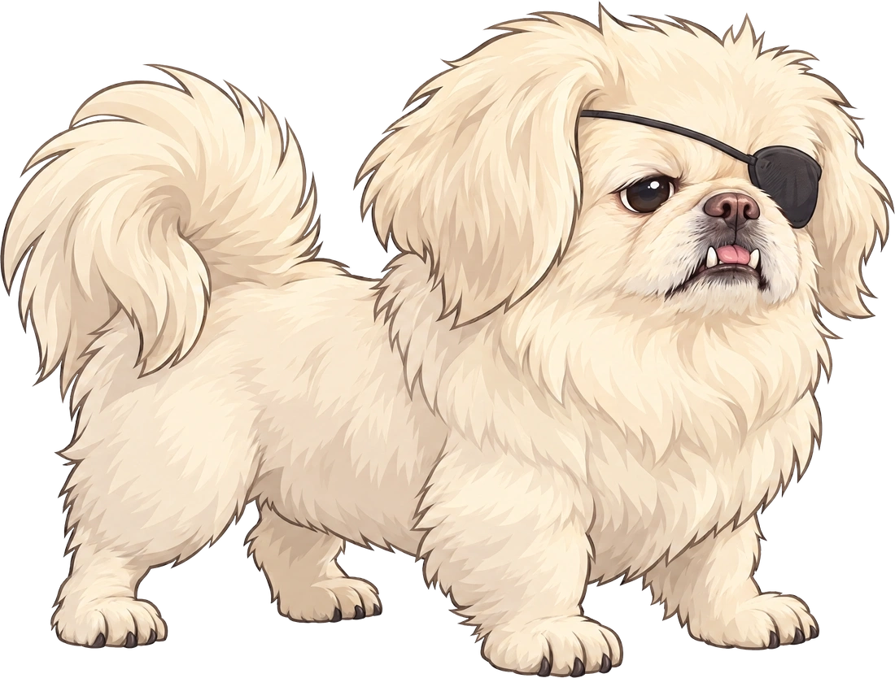
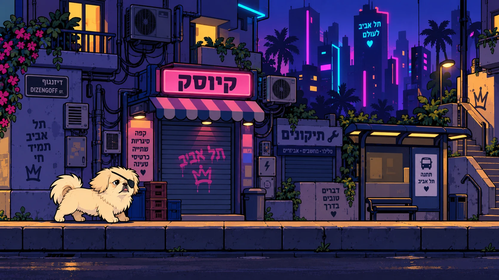

האיש עם שמונת הכלבים
נביחה אחת מתחילה את הבלגן. הרצועות מסתבכות, הכלבים מחליפים כיוון ולולו ממשיך הלאה כאילו כלום.
BARK MODEפקינז קטן, מפונק ועקשן עם טלאי על עין שמאל. העיר מלאה ברובוטים, רעש ואיסורים. לולו רואה שלולית, כדור מצפצף ועוד מקום שאסור להשתין בו.
זה משחק על טיול רגיל, מנקודת מבט מאוד לא רגילה. ההומור מגיע מהתגובות שלו — והדרך הביתה תמיד מסתיימת אצל משה.

שישה רגעים מהמסע של לולו.
אותו כלב. בכל מקום, סיפור חדש.
מהמדרכה אל הסלון, מהמשרד עד הים.
לכל מקום יש פיתויים, קיצורי דרך ובלגן משלו.
כל מהלך מגיע מהאופי שלו.
כל שש התנועות, כאן בגלילה אחת.
לא כל מפגש הוא קרב.
לפעמים מי שחוסם את הדרך הוא גם הדרך למעלה.
כל צעצוע, חטיף ואוצר קטן — ומה הוא נותן ללולו.
צעצועים, חטיפים ודברים שלא ישרדו את הטיול.
נביחה אחת מתחילה את הבלגן. הרצועות מסתבכות, הכלבים מחליפים כיוון ולולו ממשיך הלאה כאילו כלום.
BARK MODEמספריים, פן ואמבטיה. לולו מחליט שהטיול ממשיך בכיוון ההפוך. רצף בריחה בדרך עוקפת.
NO.שלט האיסור הוא הזמנה אישית. מקומות אסורים מסתתרים בכל שלב ומעניקים בונוס לסקרנים.
+500 ILLEGAL PEEבסוף כל שלב משה מתכופף, מרים את לולו, ושניהם יוצאים יחד מהפריים. הכלב שנבח על עיר שלמה הופך שוב לכלב קטן בידיים של האדם שלו.

רחוב אחד שמוכיח שהמשחק כיף — ומשם מרחיבים את העיר.
ריצה, קפיצה, נביחה, שלולית וסימון טריטוריה.
כלב־טרמפולינה, עכבר, חולדה, חנות ירקות וצעצוע סודי.
דירות, חנויות, משרדים, הים ובוסים עירוניים.
שבילי ריח: סימונים שכבר השארנו מגלים דרך חזרה או מקום סודי.
אותו מסלול ביום ובלילה: תריסים, תאורה והתנהגות משתנים ומזמינים טיול נוסף.
העיר מגיבה: נביחה מפעילה חיישן, חתול מפיל חפץ ודלת נפתחת.
נגישות: שליטה פשוטה, אפשרות להפחתת הבהובים ומצב טיול רגוע.
שדרוגים של אופי: צעצועים ותגובות חדשות, בלי להפוך את לולו לכלב אקרובטי.
סרטון הקונספט של המשחק.
מצלמה מהצד. תנועה משמאל לימין. ללא UI.
המצלמה נשארת בגובה קבוע ועוקבת אופקית. לולו מחבר בין המקומות בתנועה אחת — מהכאוס ברחוב ועד הרגע השקט עם משה.
לולו רץ בתל אביב ביום, עוצר לנביחה חזקה. היונים מתעופפות והכדור מתגלגל ימינה.
מעבר מאחורי עמוד אל הרחוב בלילה. שפריץ משלולית, חולדה ועכבר בורחים קדימה.
דלת החנות מסתירה את המעבר. לולו תופס צעצוע, נשמעת צפצפה, והוא ממשיך לרוץ.
בדירה, קפיצה קטנה על גב הכלב הגדול הופכת לזינוק אל הספה. החתול לא מתרגש.
במשרד פרסום, לולו חולף בין רגלי שולחן וקופץ מעל השואב. הרובוט הגדול נשאר מאחור.
בחוף בשקיעה, לולו מגיע אל משה. משה מתכופף, מרים אותו בעדינות ושניהם ממשיכים יחד ימינה.
סאונד: קצב קליל, כפות על מדרכה, נביחה, מים וצפצפת צעצוע. המוזיקה מתרככת כשמשה מגיע. ללא קריינות או טקסט על הפריים.